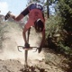
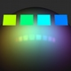
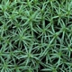
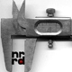
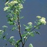
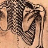
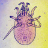
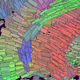

|
|
Library names | ||
| teem |
The names of my libraries may seem somewhat odd, so their origin should be explained. In general, I don't think that acronyms usually make good names for software. Either they are spelled out instead of just spoken, or they are clever contrivances nervously posing as words. I do admit to full acronym guilt with respect to nrrd and unrrdu. Since then, however, I've stuck to using actual words for my software names.
Imagine: words! The way some people name their software, you'd think we were in the middle of some sort of word drought. In fact, there are many words. As names for software, words have two under-appreciated benefits, both related to what it means to be a word:
This is the 21st century. I encourage you to name your next software project with a word. And remember: there are lots of verbs and adjectives out there, too, not just nouns.
teem |
| Teem is a verb meaning to be full of things; abound or swarm. Perhaps someday this will be a powerful swarm of libraries! |
air | Like air itself, this is the basic stuff that everyone else (the other libraries) needs. There isn't much to my air library, but I still use it all the time. | |
hest | 
| Hest is an archaic noun meaning command or behest; the usage in "at the officer's behest" is probably more familiar. Since it helps command-line power-users, hest is illustrated with an image of a powerful commanding authority. |
biff |  | Biff is a verb meaning to strike or punch. The connotation of "to fall or crash" started in skateboard/snowboard culture. As usual, other sports have have since borrowed that usage. |
ell | Are there any obvious names for linear algebra libraries that aren't already taken? The ell is an old English measure of length, about 45 inches, apparently derived from "elbow" | |
nrrd | Pronounced "nerd". While this is an acronym, it is also a re-spelling of nerd (a term I identify with) in the spirit of riot-grrrl music and feminism. | |
unrrdu | 
| My second and last acronym, for "Utah Nrrd Utilities". Pronounced "You nerd you". |
dye |  | A word related to color, but not a common word in computer graphics, so a good way to avoid namespace clashes. The image was rendered by echo. |
moss |  | Like mosaics, moss tends to cover and spread over things; eventually this library will do mosaicing. The image is of gametophytes of Polytrichum, one of the Bryophytes |
gage |  | An uncommon but valid variant spelling of gauge, descriptive of this library's measurement abilities. The image isn't actually of a gauge, but of Vernier calipers (though they can also be used as a depth gauge). |
bane |  | Finishing my Master's thesis was a long process. Indeed, for a time, it was the bane of my life. The picture is of poison hemlock, which is closely related to cowbane. |
limn |  | Limn is a verb (pronounced exactly the same as "limb") meaning to depict by painting or drawing. The picture is from one of DaVinci's sketches |
hoover | 
| As a volume rendering framework, hoover is like a vacuum cleaner: it sucks. Its not very flexible, and the derived volume renderers will be slow. To avoid trademark issues, the image is of another famous Hoover. |
mite |  | Dumb joke: the set of functions implementing this scalar volume renderer are only useful after they've been put into hoover. Fitting the name, mite is small, simple, unglamorous, but effective. |
ten |  | This is a library for dealing with diffusion tensors (my research area); "ten" is just the first syllable of "tensor". |
echo | Like rays, echoes bounce off things. Echo is already used as a library name, but I don't think that would ever be on a teem-using link line. The image is a study for the John Williams Waterhouse painting of the Greek nymph. |